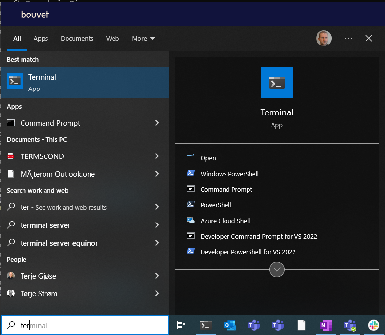
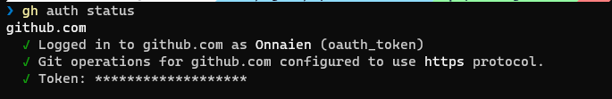
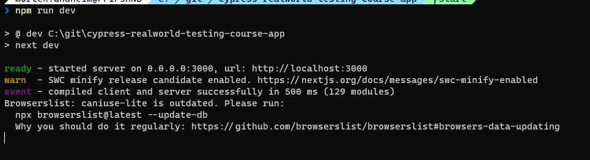
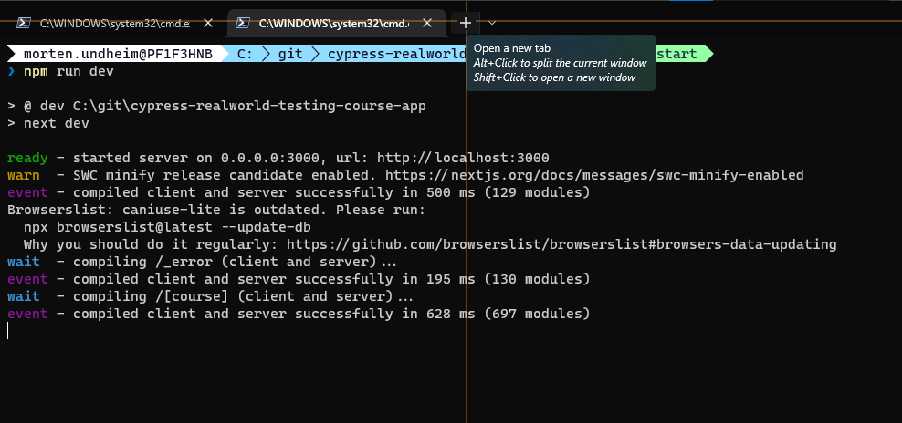
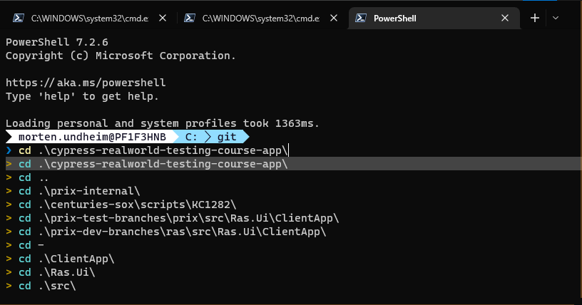
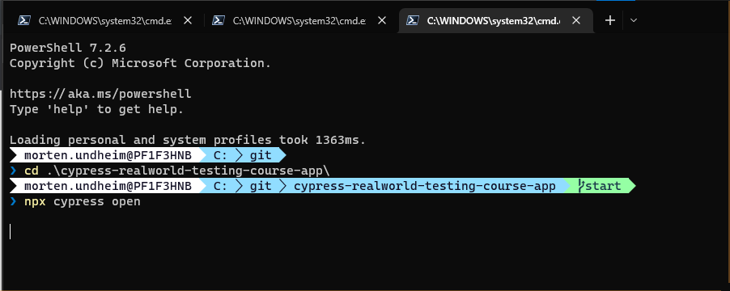
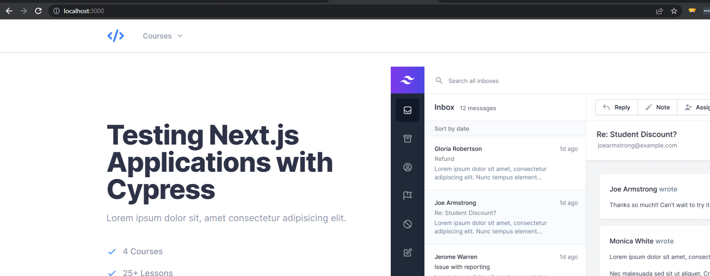
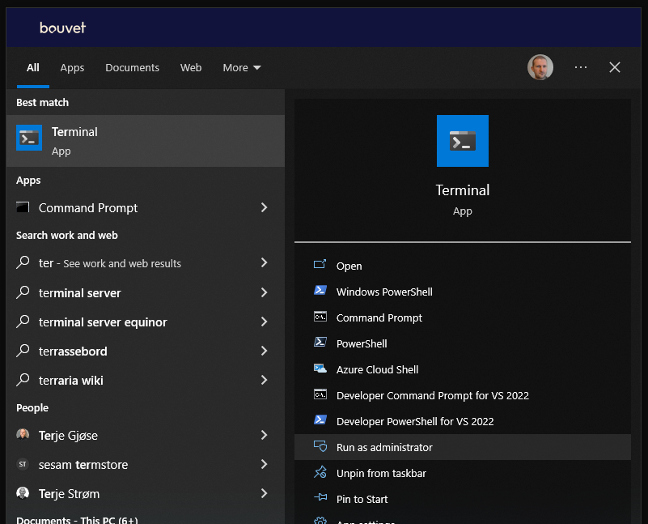
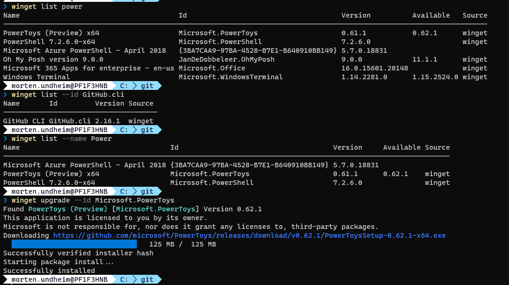
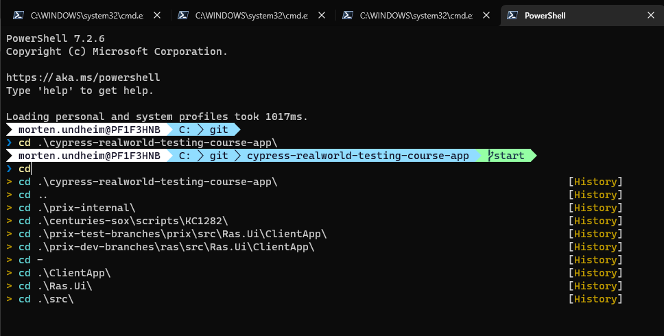

Introduction to Cypress course
Introduction
This was a help site when running the learn.cypress.io course for mostly non-developers. Just kept for reference.
We start by installing tools that are needed to run the course. This part is replacing the part in the course that describe needed tool installation. The reason for replacing it, is to try to create a more complete and easy to follow installation guide. The installation is based on using windows terminal as the cmd line tool. Winget is used as the main installation tool.
Windows terminal
Open a windows terminal window like this and select "Powershell":

visual studio code
Check if already installed:
If not already installed, you can install by running:
NodeJS
Check if you have NodeJs installed
If it is installed you get information about what version is installed. Now goto the download page and select the LST version, download and install IF you did not get any results from the command above or have an older version installed: https://nodejs.org/en/
git
Check if you have git installed
If not installed, install by:
github cli
Check if installed:
If result is "No installed package found matching input criteria.", install by:
Check gh auth status:
Ok status should look something like this:

If error message, start interactive gh auth login by:
Cypress course code installation
Now you need to go to the folder where you want to download git repositories Here is an example on how to go to the c:\ folder and create a "git-repos" folder:
Goto folder where you want the course repo downloaded and clone the course repo.
Goto the project folder and install the npm modules needed to run the application:
The del (delete) command above is added to fix something that seems to be an inconsistency (I will add and issue on the course repo). The file is regenerated by the npm install command.
Add cypress to the app project:
Open the project files in Visual studio code:
The course instruct to run command line commands in terminal windows in Visual Studio Code. The terminal windows included in Visual Studio Code is basically doing the same job as the "standalone" terminal window we have used in this guideline.
Now it is time to start the application you are going to test against:
Now the application has started and you cannot run any more commands in your command window until the application has been stopped:

So then we open a new terminal window to run other commands:

and go to the project folder:

You will use this terminal window when you soon in the course are asked to open the cypress test gui by running this command:

Now it is time to open the application you have started in the browser by entering localhost:3000 in the address bar:

The preparations for the course are done, and now you should head over to and follow the course documentation frome here:
Tips and recommendations
winget
We use winget to install and upgrade tools
add completion to winget
https://github.com/microsoft/winget-cli/blob/master/doc/Completion.md
Windows terminal administrator mode
If you are asked to run windows terminal in administrator mode:

examples of winget usage
check what is installed and upgrade examples (just to give an idea of what it can be used for):

nvm tool can be installed if you need to switch between several versions of node
Install nvm:
node installation by using nvm (including npm tool) for Cypress course (latest Long Term Support)
NB! you need to start windows terminal in admin mode to run this installation
Install latest verson of Long Time Support version of node:
Optional npm add-on
If you run npm commands very often, install this mo dule globally to make life easier, ref. organizing npm scripts and npm-quick-run:
windows powershell addons
Add these lines to the file:
#-----------------------------------------------------------
# Prompt theme engine
# https://ohmyposh.dev/
#-----------------------------------------------------------
Import-Module posh-git
oh-my-posh init pwsh --config "$env:POSH_THEMES_PATH\paradox.omp.json" | Invoke-Expression
#-----------------------------------------------------------
# Scrolling/searching through history
#-----------------------------------------------------------
Import-Module PSReadLine
Set-PSReadLineOption -PredictionSource HistoryAndPlugin
Set-PSReadLineOption -PredictionViewStyle ListView
Set-PSReadLineOption -EditMode Windows
Set-PSReadLineOption -EditMode Windows
Set-PSReadLineOption -EditMode Windows
Set-PSReadLineKeyHandler -Key UpArrow -Function HistorySearchBackward
Set-PSReadLineKeyHandler -Key DownArrow -Function HistorySearchForward
You will get a nice informal command prompt and history features when writing a command.
You see the path you are located in, the git branch name (start) and the last "cd" command you ran:
